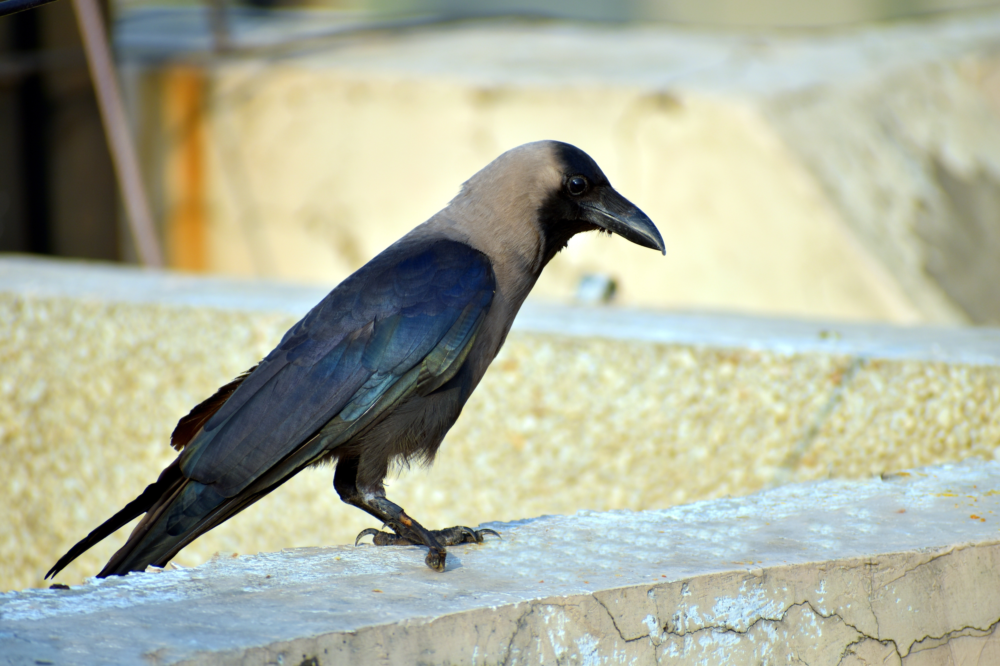

The House Crow is a highly adaptable member of the crow family that is closely associated with people and human settlements across the Indian subcontinent. It has a greyish neck and upper breast contrasting with its black head, wings, and body, giving it a distinctive two-toned appearance. It is commonly found in towns, cities, villages, agricultural areas, markets, coastal settlements, and around sources of food and human waste. Compared with the similar Large-billed Crow, the House Crow is noticeably smaller and has a much slimmer bill and body shape. Its grey neck and breast are also an important identifying feature, whereas the Large-billed Crow has a more uniformly dark appearance. The House Crow is generally more closely associated with densely populated human environments than many other crow species. Its active, opportunistic behaviour and tendency to gather around food sources further distinguish it from less urban-adapted corvids. Its characteristic calls are harsh and familiar, often heard from rooftops, trees, poles, and other structures in populated areas. Taken together, its grey neck, relatively slender build, black head and wings, and strong association with human settlements make the House Crow one of the easiest crows to identify in much of its range.